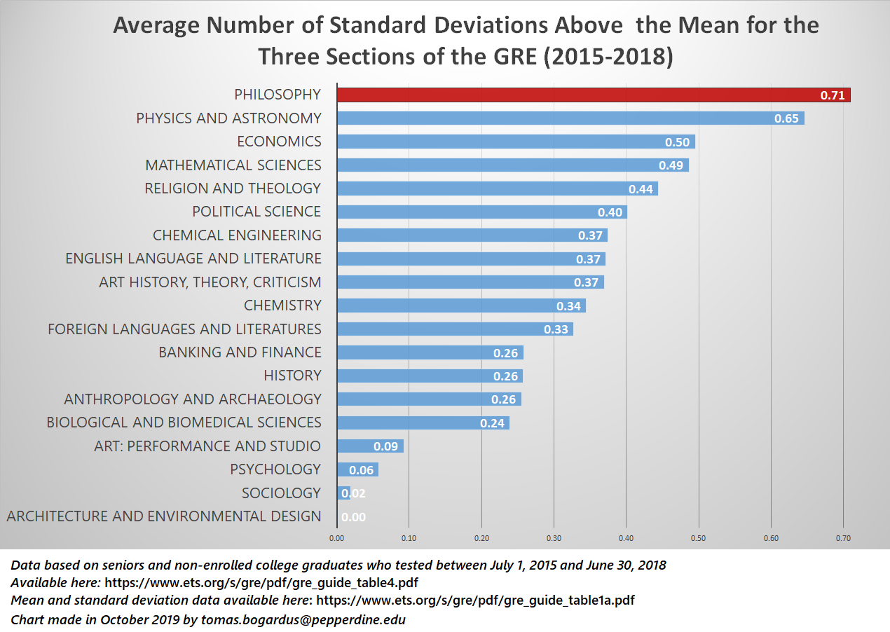
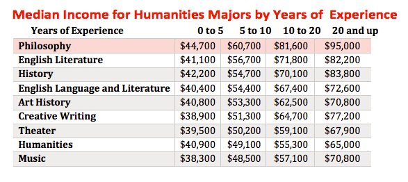

Why Philosophy?

Major in critical thinking and debate
Now that you’ve seen the numbers, I have to acknowledge the underlying value of participating in a strong
philosophy program. That is: developing (even if only a little) your ability to think critically and articulate
arguments. In fact, this is basically all you do in philosophy classes: Read, think deeply, thoroughly discuss
ideas, and even more diligently write about them… over and over again.
Pros and Cons (from actual students)
From my experience, those who like the subject tend to like the major. This might seem like an obvious thing to
say (almost “tautological” *wink wink*), but it’s surprisingly not always true. As a matter of fact, all of the
students who have the most negative philosophy program at Bates are the most passionate philosophers.
Here is how I would break it down: About 80 percent of philosophy majors are people who are just getting through
it. They probably find philosophy classes moderately interesting or were encouraged to take it by someone,
whatever. In the minority, however, are about 20 percent of students who are true philosophy geeks. These
students read dense philosophy for fun, talk about their senior thesis at breakfast, and have probably at least
considered getting a further degree in philosophy. It is within this more passionate group that real criticism
arises.
Below, I’ll list all of the pros and cons for specifically studying philosophy at Bates, and add an asterisk to
those which apply to NESCAC schools in general.
Potential Pros
Potential Cons
Related Majors at Bates
If you’re considering majors right now, I’d recommend our other blogs on knowing if a major is right for you,
which will be up soon. For more specific information and/or questions, please do not hesitate to email us at
NescacGuide@gmail.com.
